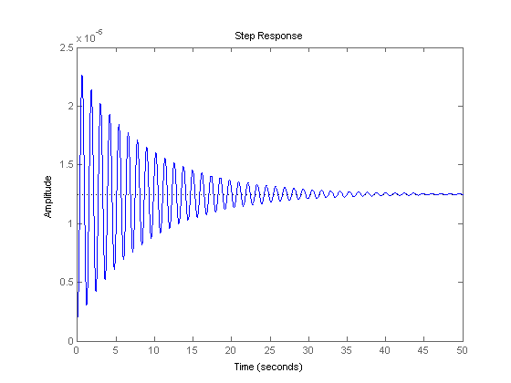
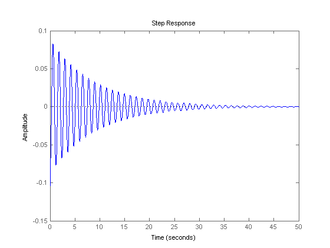
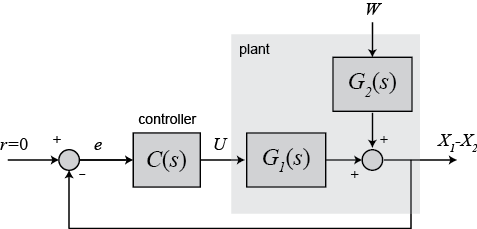

Suspension: System Analysis
Key MATLAB commands used in this tutorial are: ss , step
Contents
System model
The state-space and transfer function models of the bus suspension problem were derived in the Suspension: System Modeling page.
System parameters
(M1) 1/4 bus body mass 2500 kg
(M2) suspension mass 320 kg
(K1) spring constant of suspension system 80,000 N/m
(K2) spring constant of wheel and tire 500,000 N/m
(b1) damping constant of suspension system 350 N.s/m
(b2) damping constant of wheel and tire 15,020 N.s/m
(U) control force
Design requirements
A good bus suspension system should have satisfactory road holding ability, while still providing comfort when riding over bumps and holes in the road. When the bus is experiencing any road disturbance (i.e. pot holes, cracks, and uneven pavement),the bus body should not have large oscillations, and the oscillations should dissipate quickly. Since the distance X1-W is very difficult to measure, and the deformation of the tire (X2-W) is negligible, we will use the distance X1-X2 instead of X1-W as the output in our problem. Keep in mind that this is an estimation.
The road disturbance (W) in this problem will be simulated by a step input. This step could represent the bus coming out of a pothole. We want to design a feedback controller so that the output (X1-X2) has an overshoot less than 5% and a settling time shorter than 5 seconds. For example, when the bus runs onto a 10 cm high step, the bus body will oscillate within a range of +/- 5 mm and return to a smooth ride within 5 seconds.
Open-loop step response
We can use MATLAB to display how the original open-loop system performs (without any feedback control). Add the following commands into the m-file and run it in the MATLAB command window to see the response of unit step actuated force input, U(s). Note that the step command will generate the unit step inputs for each input.
M1 = 2500;
M2 = 320;
K1 = 80000;
K2 = 500000;
b1 = 350;
b2 = 15020;
s = tf('s');
G1 = ((M1+M2)*s^2+b2*s+K2)/((M1*s^2+b1*s+K1)*(M2*s^2+(b1+b2)*s+(K1+K2))-(b1*s+K1)*(b1*s+K1));
step(G1)
 From this graph of the open-loop response for a unit step actuated force, we can see that the system is under-damped. People sitting in the bus will feel very small amount of oscillation. Moreover, the bus takes an unacceptably long time to reach the steady state (the settling time is very large). Now enter the following commands to see the response for a step disturbance input, W(s), with magnitude 0.1 m.
G2 = (-M1*b2*s^3-M1*K2*s^2)/((M1*s^2+b1*s+K1)*(M2*s^2+(b1+b2)*s+(K1+K2))-(b1*s+K1)*(b1*s+K1)); step(0.1*G2)
From this graph of the open-loop response for 10 cm step disturbance, we can see that when the bus passes a 10 cm high bump on the road, the bus body will oscillate for an unacceptably long time(~50 seconds) with an initial amplitude of 8 cm. People sitting in the bus will not be comfortable with such an oscillation due to the large overshoot and long settling time.
The solution to these problems is to add a feedback controller into the system to improve the performance. The schematic of the closed-loop system is the following, which will be discussed in much more detail in the controller design sections.
